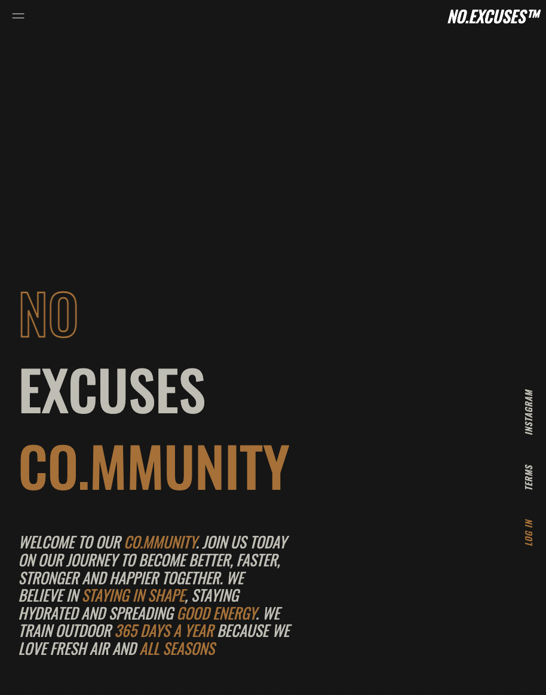
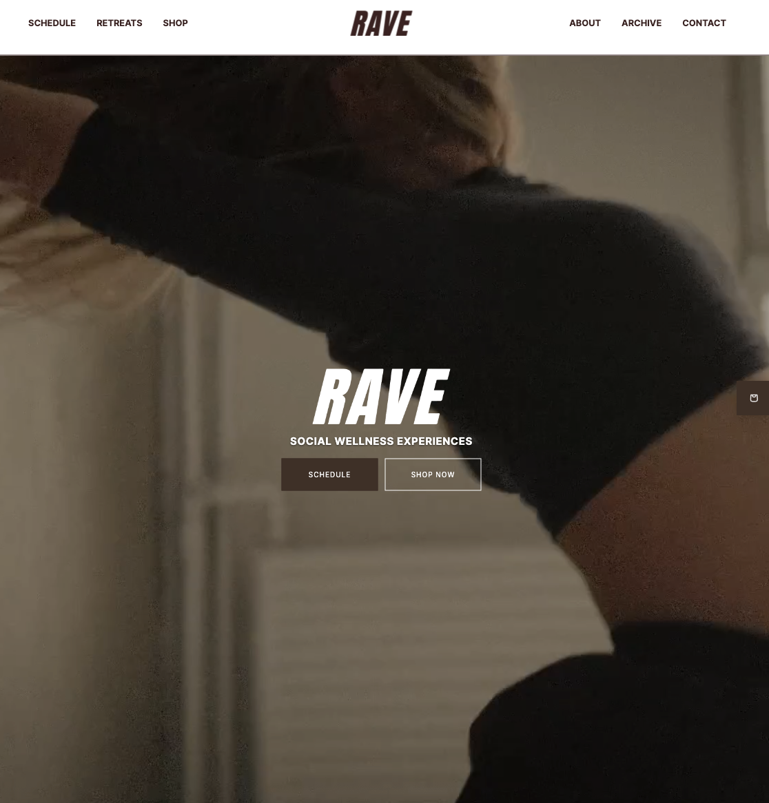
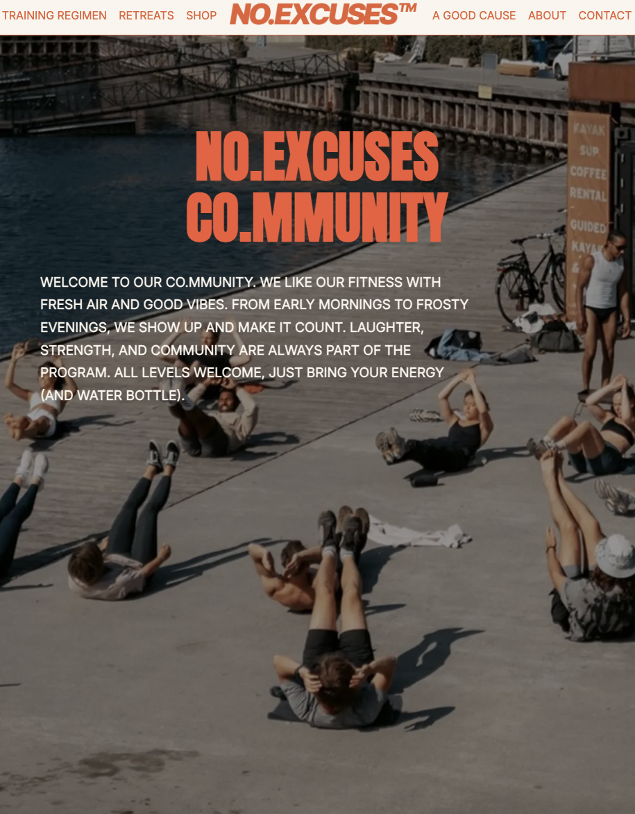

Sandkassesite og virksomhedssite
Tema 5 - Grundlæggende indhold
På dette tema har jeg både arbejdet med et sandkassesite om valgfrit emne og et virksomhedssite i samarbejde med en gruppe medstuderende. I sandkassesitet har jeg tilføjet en lottiefile som er udarbejdet i After Effects med illustrationer jeg selv har lavet. Virksomhedssitet er et re-design af en virksomheds nuværende hjemmeside. Læs mere om min proces nedenfor
Sandkassesite
I sandkassesite var der fokus på indholdsproduktion, herunder redigering af billeder i Adobe Photoshop og udarbejdelse af Lottie-file i Adobe After Effects. Sitet følger et udleveret wireframe, men emnet og indholdet var valgfrit. Herunder kan du se råbillederne jeg har taget og de redigerede billeder. Jeg har skruet på lyset for at opnå lyse farver og jeg har tilføjet et flair på sidste billede. Der er ikke lavet brugertests på design eller website, da opgaven udelukkende handlede om produktion af indhold.
Råbilleder
Redigerede billeder
Hvis du er interesseret i at se hele sitet og min Lottie-file, så klik her.
Virksomhedssite
Dette virksomhedssite er udviklet på baggrund af et allerede eksistende website, hvor opgaven lød på at lave et re-design til en virksomheds hjemmeside. Dette er site er derfor udviklet ud fra virksomhedens eksisterende målgruppe og identitet. Derudover leverede virksomhedens ejer en stilreference. Da målgruppe, identitet og stilreference allerede var fastlagt, fandt vi det vigtigt og nødvendigt at lave brugertests på både eksisterende site og det re-designede site, derfor har vi gjort brug af både Likert-test og 5-second test.
Oprindeligt site
Stilreference
Re-designet site
Designprocessen indebar blandt andet udarbejdelse af sitemap, user stories, designassociationer, moodboards, wireframes og prototyper. Vi har gjort brug af disse både for at kunne præsentere en idé til kunden men også for at skabe et overblik for os selv inden vi påbegyndte udviklingen af sitet. Hele gruppen har været med til at kode og udvikle sitet og koden er delt på GitHub for at sikre en sammenhængende udviklingsproces.
Hvis du er interesseret i at se hele sitet, så klik her.